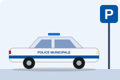

La Police Municipale
Textes de lois, articles à connaître, cartes mentales et quiz pour réviser.
- Loi du 15 avril 1999
- 45 questions de quiz
- 61 textes avec lien officiel
- 4 731 communes sur la carte
Les missions
Placée sous l’autorité du maire, la police municipale assure trois missions pour garantir le bon ordre, la tranquillité, la sécurité et la salubrité publiques.
Prévention
Patrouilles et prévention des troubles à l’ordre public.
Surveillance
Rues, parcs et bâtiments communaux.

Verbalisation
Stationnement, circulation et arrêtés du maire.
Les quatre espaces
Première visite ? Une visite guidée de 30 secondes explique comment le site est rangé.
Réforme en cours
Adopté par le Sénat le 10 février 2026, puis en commission à l’Assemblée nationale le 29 avril 2026. L’examen en séance, annoncé pour le 21 septembre 2026, a été reporté sans nouvelle date. Il prévoit notamment des services à compétence judiciaire élargie, de nouvelles amendes forfaitaires délictuelles et l’usage de drones à titre expérimental.
Suivre le dossier à l’Assemblée nationale ↗
Mis à jour le 13 octobre 2026.
Site de révision non officiel. Vérifie toujours la version en vigueur sur Légifrance.
Autres sites
Les Sapeurs-Pompiers · Révisions SPV, SPP et JSP : le site est suspendu jusqu’à nouvel ordre.
Site suspendu jusqu’à nouvel ordre.
Articles essentiels
Le maire est chargé de la police municipale, sous le contrôle administratif du représentant de l’État.
Lire l’article sur Légifrance ↗
Bon ordre, sûreté, sécurité et salubrité publiques : sûreté et commodité du passage, bruit, troubles de voisinage, rassemblements.
Lire l’article sur Légifrance ↗
Fonctions des agents sous l’autorité du maire et relations avec les autres forces.
Lire l’article sur Légifrance ↗
Coordination entre police municipale et forces de sécurité de l’État (avec le décret n° 2000-275).
Lire l’article sur Légifrance ↗
Prévention et surveillance du bon ordre, de la tranquillité, de la sécurité et de la salubrité publiques ; exécution des arrêtés de police du maire ; constatation de certaines contraventions, dans les limites fixées par la loi.
Lire l’article sur Légifrance ↗
Contraventions que les agents peuvent constater par procès-verbal.
Lire l’article sur Légifrance ↗
Serment préalable à la prise de fonctions (loi du 24 août 2021).
Lire l’article sur Légifrance ↗
Les policiers municipaux sont agents de police judiciaire adjoints. Ils secondent les OPJ et rendent compte des infractions dans les conditions du CPP.
Lire l’article sur Légifrance ↗
Obligations d’information envers les OPJ territorialement compétents. Article appelé à être abrogé au 1er janvier 2029 (ordonnance n° 2025-1091 du 19 novembre 2025).
Lire l’article sur Légifrance ↗
Toute personne peut appréhender l’auteur d’un crime flagrant ou d’un délit flagrant puni d’emprisonnement et le conduire devant l’OPJ le plus proche.
Lire l’article sur Légifrance ↗
Contraventions routières que les APJA peuvent constater, dans les limites de l’article.
Lire l’article sur Légifrance ↗
Respecter la Constitution, les lois et la dignité des personnes ; agir dans le cadre de ses compétences ; impartialité, discernement, courtoisie ; secret professionnel ; rendre compte à la hiérarchie. Un manquement peut entraîner une sanction disciplinaire, voire pénale.
Lire le code de déontologie sur Légifrance ↗
Tous les autres textes, avec leurs liens : Textes de Lois.
Textes de Lois
La loi du 15 avril 1999
Elle définit le rôle des policiers municipaux, leurs missions et leurs relations avec la Police nationale et la Gendarmerie nationale. Elle s’inscrit dans les pouvoirs de police du maire, responsable du bon ordre, de la tranquillité, de la sécurité et de la salubrité publiques.
Objectifs
- Encadrer les missions des policiers municipaux.
- Préciser leurs compétences et leurs limites légales.
- Renforcer la sécurité locale et la prévention des troubles à l’ordre public.
- Organiser la coopération avec les forces de sécurité de l’État.
Principales mesures
- Missions : prévention et surveillance du bon ordre, de la tranquillité, de la sécurité et de la salubrité publiques ; respect des arrêtés du maire ; constatation de certaines infractions routières.
- Coordination : une convention de coordination répartit les rôles avec les forces de l’État.
- Formation : cadre renforcé pour la formation initiale et continue.
- Déontologie : code de déontologie, encadrement de l’équipement et de l’identification des agents.
Les textes de référence
| Texte | Ce qu’il définit |
|---|---|
| CGCT ↗ | Pouvoirs de police du maire, missions de police municipale. |
| Code de la sécurité intérieure (CSI) ↗ | Statut, missions et organisation des agents. |
| Code de procédure pénale (CPP) ↗ | Pouvoirs des agents de police judiciaire adjoints (APJA), notamment art. 21 et 21-2. |
| Code pénal ↗ | Infractions et sanctions. |
| Code de la route ↗ | Circulation, stationnement, infractions routières de leur compétence. |
Quel texte selon l’intervention
| Situation | Textes à ouvrir |
|---|---|
| Circulation et stationnement | Code de la route, CGCT, arrêtés de la commune |
| Bruit et tranquillité | CGCT, Code de la santé publique, Code de l’environnement, arrêtés municipaux et préfectoraux |
| Occupation du domaine public | CG3P, CGCT, arrêtés locaux |
| Urbanisme et constructions | Code de l’urbanisme, pouvoirs de police du maire |
| Animaux | Code rural et de la pêche maritime, Code pénal, arrêtés locaux |
| Déchets et salubrité | Code de l’environnement, CGCT, arrêtés locaux |
| Vidéoprotection et données | CSI, RGPD, loi Informatique et Libertés |
| Manifestations et rassemblements | CSI, CGCT, arrêtés préfectoraux et municipaux |
| Ivresse, secours, personnes vulnérables | CPP, Code de la santé publique, procédures locales |
| Fonction publique territoriale | Code général de la fonction publique |
Prérogatives
| Prérogative | Exemple |
|---|---|
| Prévention | Patrouilles, prévention des troubles. |
| Surveillance | Rues, parcs, bâtiments communaux. |
| Verbalisation | Stationnement, circulation, arrêtés municipaux. |
| Application des arrêtés | Bruit, marchés. |
| Constatation | Infractions de leur compétence, rapports et procès-verbaux. |
| Assistance | Aider une personne en danger, alerter les secours. |
| Interpellation | Appréhender un auteur selon l’art. 73 CPP, comme toute personne. |
Limites de leurs pouvoirs
- Contrôle d’identité : pas de pouvoir général (art. 78-2 CPP ↗).
- Garde à vue : ils ne la décident pas, elle relève de l’autorité judiciaire.
- Fouille et palpation : seulement dans les cas et conditions expressément prévus par la loi.
- Enquête judiciaire : pas les pouvoirs généraux d’un OPJ.
Quiz
Carte de France des polices municipales
Chaque point bleu est un poste de police municipale. Clique sur un point, ou cherche ta commune, pour voir l’adresse du poste et les arrêtés de la commune et de la préfecture.
Sources : enquête polices municipales 2024, Ministère de l’Intérieur (communes et effectifs) ; Annuaire de l’administration, Service-Public (adresses des postes et des mairies) ; sites des préfectures (recueils des actes administratifs). Fond de carte © OpenStreetMap. Données relevées en octobre 2026.
Fiches mémo
L’essentiel de chaque thème sur une fiche. Clique sur « Imprimer cette fiche » pour l’avoir sur papier.
Glossaire
Les sigles et mots du métier, expliqués simplement.
Frise chronologique
Les grandes étapes du droit de la police municipale, de 1884 à la réforme en cours.
Le métier de policier municipal
Les trois cadres d’emplois, l’accès par concours, la nomination, la formation et la rémunération.
Trois cadres d’emplois
| Catégorie | Cadre d’emplois | Grades | Accès | Texte |
|---|---|---|---|---|
| C | Agents de police municipale | Gardien-brigadier, puis brigadier-chef principal (par avancement) | Concours, niveau CAP-BEP | Décret 2006-1391 ↗ |
| B | Chefs de service de police municipale | Chef de service, principal de 2e classe, principal de 1re classe | Concours, niveau bac | Décret 2011-444 ↗ |
| A | Directeurs de police municipale | Directeur, directeur principal | Concours, niveau bac + 3 | Décret 2006-1392 ↗ |
Grades et échelons
- Le grade est le rang du fonctionnaire dans son cadre d’emplois (par exemple gardien-brigadier, puis brigadier-chef principal). Il s’obtient par concours ou par avancement.
- L’échelon est un palier de progression à l’intérieur d’un grade. Il détermine le traitement de base : on passe d’un échelon au suivant, en général à l’ancienneté.
- L’avancement de grade (promotion) dépend de l’ancienneté, de l’examen professionnel ou de la liste d’aptitude, et du nombre de postes disponibles dans la collectivité.
Les durées et conditions exactes figurent dans les décrets listés ci-dessus. Vérifie-les sur Légifrance avant de t’y fier pour un concours ou une promotion.
Le concours de gardien-brigadier
- Externe : au moins 18 ans, diplôme de niveau CAP-BEP ou équivalent (une expérience dans la sécurité peut être reconnue). Au moins la moitié des postes lui est réservée.
- Interne : pour certains agents publics, par exemple les ASVP, avec au moins 2 ans d’ancienneté.
- Organisation : par les centres de gestion de la fonction publique territoriale ; l’inscription se fait sur le site du centre de gestion organisateur.
- Après le concours : le lauréat est inscrit sur une liste d’aptitude et doit trouver lui-même une commune qui le recrute.
Décret 94-932 sur le concours ↗
Nomination, agrément et serment
- L’agent est nommé par le maire (ou le président de l’intercommunalité).
- Il est agréé par le préfet et le procureur de la République, puis assermenté. L’agrément peut être retiré ou suspendu.
- Avant de prendre ses fonctions, il prête serment (depuis la loi du 24 août 2021).
L. 511-2 CSI ↗L. 515-1 A CSI ↗
La formation
- Formation initiale : obligatoire, assurée par le CNFPT. Pour un gardien-brigadier, 6 mois de formation pendant une année de stage, avant la titularisation.
- Formation continue : obligatoire tout au long de la carrière.
- Armement : si la commune arme ses agents, une formation préalable et des entraînements réguliers sont obligatoires.
Décret 94-933 sur la formation initiale ↗L. 511-5 CSI (port d’arme) ↗
La rémunération
Le salaire se compose d’un traitement de base, fixé par une grille indiciaire selon le grade et l’échelon, et de primes : indemnité spéciale de fonction propre à la police municipale, régime indemnitaire décidé par la commune, et selon les cas supplément familial et indemnité de résidence. Le montant varie donc beaucoup d’une commune à l’autre.
Décret 2023-1070 (grilles indiciaires) ↗Décret 2023-1069 (carrière) ↗
Sources : décrets statutaires sur Légifrance et fiches métier d’emploipublic.fr. Les conditions de concours peuvent évoluer : vérifie toujours auprès du centre de gestion.
Rechercher dans tout le site
Tableau de bord
Les chiffres des enquêtes du Ministère de l’Intérieur, de 2015 à 2024.
Nombre d’agents de police municipale en France
Voir le tableau des chiffres
Classement des départements (2024)
Voir tous les départements
Sources : enquêtes polices municipales 2015-2024, Ministère de l’Intérieur ; population : recensement Insee (découpage administratif Etalab). Les totaux par département sont recalculés à partir des fichiers : de petits écarts avec les totaux officiels sont possibles (moins de 1 %).
Est-ce que je peux… ?
Choisis une situation : l’outil te dit si un policier municipal peut agir, dans quelles conditions, et sur quel texte ça repose.
Outil de révision : en situation réelle, suis les consignes de ta hiérarchie et la version en vigueur des textes.
Rédiger un procès-verbal ou un rapport
Des modèles commentés et ce qu’il ne faut jamais oublier. Utile au quotidien et pour l’épreuve de rapport du concours.
- Ton identité, ton grade et ta qualité (agent de police judiciaire adjoint, art. 21 CPP).
- La date, l’heure et le lieu précis des faits.
- Les faits, dans l’ordre chronologique, de façon neutre et précise : ce que tu as vu et entendu, pas ce que tu supposes.
- L’identité des personnes (ou l’immatriculation du véhicule).
- Le texte qui prévoit et réprime l’infraction.
- Ce que tu as fait : avis, compte rendu à l’OPJ, appel des secours…
- Le destinataire du document, ta signature.
Qui fait quoi ?
Les acteurs autour de la police municipale et leurs liens. Clique sur un acteur pour voir son rôle.
Infractions courantes
Les contraventions qu’on rencontre souvent, avec leur classe et le montant de l’amende forfaitaire.
Les classes de contraventions
| Classe | Amende forfaitaire | Minorée | Majorée | Maximum devant le juge |
|---|---|---|---|---|
| 1re | 11 € | — | 33 € | 38 € |
| 2e | 35 € | 22 € | 75 € | 150 € |
| 3e | 68 € | 45 € | 180 € | 450 € |
| 4e | 135 € | 90 € | 375 € | 750 € |
| 5e | En principe pas d’amende forfaitaire | 1 500 € (3 000 € en récidive) | ||
Minorée : si l’on paie vite (en général sous 15 jours) ; elle ne s’applique pas au stationnement. Majorée : en cas de retard de paiement.
Exemples
Préparer le concours de gardien-brigadier
Pour une fiche détaillée sur les épreuves et les conseils, lis la page dédiée au concours.
Où passer le concours
Les concours de gardien-brigadier peuvent être organisés par les centres de gestion (CDG) ou par le CNFPT, selon le département ou la région. Pour savoir où et quand t’inscrire, repère le centre de gestion de ton département, puis consulte son site : il publie les dates d’inscription et les conditions d’accès. Les dates changent chaque année, vérifie-les toujours auprès de l’organisateur.
Voir la carte des polices municipales →Site du CNFPT ↗
Les épreuves du concours externe
| Épreuve | Durée | Coefficient |
|---|---|---|
| Admissibilité (écrit) | ||
| Rédaction d’un rapport à partir d’un dossier sur un événement survenu dans un lieu public | 1 h 30 | 3 |
| Questions de compréhension sur un texte et explication d’expressions | 1 h | 2 |
| Admission (oral et sport) | ||
| Entretien avec le jury : personnalité, motivation, connaissance des institutions | 20 min | 3 |
| Épreuves physiques : course à pied + une épreuve au choix (saut en hauteur ou en longueur, lancer de poids, natation) | — | 1 |
Les candidats admissibles passent aussi des tests psychotechniques, non notés, que le jury peut consulter pendant l’entretien.
Les conseils des jurys
- Rapport : connaître le rôle, les pouvoirs et les limites du gardien-brigadier ; justifier chaque mesure par un texte ; respecter la chronologie ; nommer précisément les destinataires ; tout écrire explicitement.
- Texte : choisir les synonymes selon le contexte, développer ses réponses, relire l’orthographe.
- Entretien : préparer une présentation de 3 minutes ; connaître les missions, moyens et limites de la police municipale ; argumenter ; connaître les institutions ; montrer sa motivation pour le service public et la police municipale (et pas pour la police nationale).
Sujets d’entraînement : rapport
Questions d’entretien possibles
Modèles de rapports →S’entraîner au quiz →
Sources : fiche concours du CNFPT ; rapport du jury 2024 (CDG 44). Vérifie toujours la brochure du centre de gestion qui organise ta session.
Tenue et équipement
Une identification commune à toutes les polices municipales, qui ne doit pas être confondue avec la Police nationale ou la Gendarmerie.
La carte professionnelle, la tenue, la signalisation des véhicules de service et les équipements des agents font l’objet d’une identification commune à tous les services de police municipale, sans confusion possible avec ceux de la Police nationale et de la Gendarmerie nationale.
Lire l’article ↗
Délivrée à chaque agent ; il la présente quand il intervient. Ses caractéristiques sont fixées par la partie réglementaire du CSI.
Port obligatoire en service, avec les insignes et la mention « Police municipale ». Ses éléments et couleurs sont fixés par arrêté.
Les véhicules de service portent une signalisation propre à la police municipale.
Seulement sur autorisation du préfet, à la demande motivée du maire, avec convention de coordination, formation et entraînements.
Les véhicules de la police municipale
Voitures, vélos, scooters : ce qui change selon le véhicule, ce que l’agent peut faire au volant et les règles à connaître.
Un véhicule de service porte une signalisation propre à la police municipale et ne doit jamais être confondu avec un véhicule de la Police nationale ou de la Gendarmerie. L’agent conduit avec le permis correspondant au véhicule. Les signaux spéciaux (gyrophare bleu, avertisseur sonore) ne s’utilisent que dans les cas prévus par le Code de la route.
Les types de véhicules
| Véhicule | Usage courant | Points d’attention |
|---|---|---|
| Voiture | Patrouilles, interventions, transport | Signalisation réglementaire et entretien régulier. |
| Vélo, VTT | Patrouilles de proximité, centre-ville, espaces piétons | Règles de circulation du cycliste ; pas de permis. |
| Scooter, moto | Déplacements rapides, zones denses | Permis de la catégorie correspondante (moto : permis A), équipement de protection. |
| Fourgon, utilitaire | Transport de matériel, événements | Permis adapté au poids et au gabarit du véhicule. |
La signalisation
Ce que l’agent peut faire sur la route
Conduire un véhicule de service
Textes à consulter
Ces informations sont générales et ne remplacent pas les textes. Les textes en vigueur font foi sur Légifrance.
Numéros utiles
Gratuits, joignables 24 h/24, même depuis un téléphone bloqué pour les numéros d’urgence.
Mes favoris
Clique sur l’étoile ☆ d’un texte, d’une fiche ou d’une commune pour la retrouver ici. Tes favoris sont gardés dans ce navigateur.
Bloc-notes
Tes notes de révision. Elles s’enregistrent toutes seules dans ce navigateur.
Apprendre
Les textes, les articles et les notions à connaître. Si tu débutes, suis l’ordre des quatre premières pages.
L’essentiel, dans l’ordre
Pour aller plus loin
S’entraîner
Teste ce que tu as appris, puis prépare l’écrit et l’oral.
Explorer
La police municipale sur le terrain : où elle est, combien d’agents, qui appeler.
Mes outils
Ce que tu gardes pour toi. Tout reste dans ton navigateur, sur cet appareil.
Cartes mémoire et oral
Lis le numéro, essaie de répondre de tête, puis touche la carte pour vérifier.
Phrase d’oral
Priorités de révision
- L. 2212-1 et L. 2212-2 du CGCT
- L. 511-1 du CSI
- Articles 21 et 73 du CPP
Cartes mentales
Chaque carte regroupe des textes autour d’un thème. Télécharge-la en image PNG (pour la regarder ou l’imprimer) ou en SVG (nette à n’importe quelle taille).
Les cartes sont générées à partir de la liste « Textes de lois ». Vérifie toujours la version en vigueur sur Légifrance.
Guide d’utilisation
Le site est rangé en quatre espaces. Tu y accèdes avec le bouton ☰ en haut à droite, ou depuis l’accueil.
Par où commencer ?
- Lis les textes de lois et les articles essentiels (Apprendre).
- Révise avec les fiches mémo et les cartes mentales.
- Fais le quiz, niveau par niveau. Tes erreurs sont gardées pour les revoir.
- Passe l’examen blanc : 20 questions en 20 minutes, noté sur 20.
Se repérer
- En haut de chaque page, une barre te montre où tu es et les pages voisines.
- La loupe 🔍 cherche dans tout le site : un numéro d’article, un mot, une commune.
- L’étoile ☆ met un texte, une fiche ou une commune dans « Mes favoris ».
- Le menu ☰ permet aussi de changer le thème (clair ou sombre) et la taille du texte.
Nouveautés
- 15 octobre 2026 : date de mise à jour visible en bas de chaque page, lien pour signaler une erreur, amélioration du partage sur les réseaux sociaux.
- 14 octobre 2026 : mise en ligne publique du site, avec mentions légales et gestion des cookies.
Questions fréquentes
Où sont enregistrés mes favoris, notes et scores ?
Uniquement dans ton navigateur, sur cet appareil. Rien n’est envoyé. Si tu changes de téléphone ou vides les données du navigateur, ils disparaissent. Pense à télécharger tes notes importantes en .txt.
Comment télécharger une carte mentale ?
Va dans Apprendre › Cartes mentales et choisis PNG ou SVG sous la carte voulue. Ton navigateur peut te demander de confirmer l’enregistrement.
Le site marche-t-il sans internet ?
Une fois la page ouverte, presque tout fonctionne. Seul le fond de carte détaillé a besoin d’internet. Les liens Légifrance aussi, évidemment.
Les informations sont-elles officielles ?
Non. C’est un site de révision personnel. Les textes font foi uniquement sur Légifrance, où chaque lien du site renvoie. Voir les mentions légales.
Une erreur, un texte périmé ou une idée d’amélioration ? Écris-moi par e-mail.
Mentions légales, confidentialité et cookies
Dernière mise à jour : 15 octobre 2026.
Site non officiel
Le contenu est un résumé pédagogique. Il peut contenir des erreurs ou ne plus être à jour, et ne constitue pas un conseil juridique. Seuls les textes publiés au Journal officiel et consultables sur Légifrance font foi.
Ce site n’est pas un organisme de formation, ne délivre aucune certification et ne garantit ni la réussite à un concours ni l’obtention d’un emploi. Les questions du quiz et de l’examen blanc sont des exercices d’entraînement, pas les épreuves réelles.
Éditeur
Site édité par un particulier, à titre non professionnel et non commercial. Comme le permet la loi n° 2004-575 du 21 juin 2004 pour la confiance dans l’économie numérique (LCEN), l’éditeur ne publie pas son identité ; elle est connue de l’hébergeur.
Hébergeur
GitHub, Inc. (service GitHub Pages), 88 Colin P. Kelly Jr. Street, San Francisco, CA 94107, États-Unis. Site : github.com.
Propriété intellectuelle
© 2026 La Police Municipale. Tous droits réservés.
L’organisation du site, les textes de présentation, les fiches, les questions de quiz, les cas pratiques, les cartes mentales et le design sont protégés par le droit d’auteur. Toute reproduction, copie ou diffusion, totale ou partielle, sans l’autorisation de l’éditeur est interdite (article L. 122-4 du Code de la propriété intellectuelle) et peut constituer une contrefaçon (article L. 335-2).
Sont autorisés : la consultation, l’usage personnel pour réviser (cartes mentales téléchargées, notes) et les courtes citations avec mention de la source (article L. 122-5). Les textes de loi et les données publiques cités restent librement réutilisables depuis leurs sources officielles, indiquées ci-dessous.
Sources
- Textes juridiques : Légifrance (DILA). Les liens renvoient directement aux textes officiels.
- Effectifs des polices municipales : Ministère de l’Intérieur, sur data.gouv.fr, sous Licence Ouverte (Etalab). Population : Insee. Les totaux par département sont recalculés et peuvent différer légèrement des chiffres officiels.
- Fond de carte : © contributeurs OpenStreetMap (licence ODbL).
- Concours : informations résumées d’après les documents du CNFPT et un rapport de jury publié par le CDG 44, sans reproduction.
- Logiciels et polices : Leaflet (licence BSD-2), polices Atkinson Hyperlegible et Bricolage Grotesque (SIL Open Font License 1.1), intégrées au site.
Données personnelles
- Le site ne demande aucun compte, n’envoie aucun formulaire, n’affiche pas de publicité, ne mesure pas l’audience et ne dépose aucun cookie.
- Tes favoris, notes, scores de quiz, ton thème et la taille du texte sont gardés seulement dans ton navigateur (stockage local), sur ton appareil. Ils ne sont jamais envoyés à l’éditeur. Ce stockage sert uniquement aux fonctions que tu utilises, il ne nécessite donc pas de consentement.
- L’éditeur ne détient aucune donnée te concernant.
- Hébergement : comme pour tout site, l’hébergeur GitHub reçoit des données techniques de connexion (adresse IP, navigateur, page demandée) pour servir la page et assurer sa sécurité. GitHub est établi aux États-Unis et adhère au Data Privacy Framework UE–États-Unis, qui encadre ces transferts. Voir la déclaration de confidentialité de GitHub.
- Carte : quand tu ouvres la carte de France, les images du fond de carte sont chargées depuis les serveurs d’OpenStreetMap, qui reçoivent alors ton adresse IP (politique de la Fondation OpenStreetMap).
- Liens externes (Légifrance, data.gouv.fr, itinéraires Google Maps…) : ils ouvrent d’autres sites, qui ont leurs propres règles.
- Pour toute question sur tes droits (RGPD), tu peux t’adresser à la CNIL.
Cookies et traceurs
| Ce qui est enregistré | Où | Pourquoi | Durée |
|---|---|---|---|
| Favoris, notes, scores, erreurs du quiz | Stockage local de ton navigateur | Te rendre les fonctions que tu utilises | Jusqu’à ce que tu les effaces |
| Thème, taille du texte, guide déjà vu | Stockage local de ton navigateur | Garder tes réglages | Jusqu’à ce que tu les effaces |
- Aucun cookie n’est déposé par le site : pas de mesure d’audience, pas de publicité, pas de bouton de réseau social, pas de pistage.
- Le stockage local ci-dessus sert uniquement à des fonctions que tu demandes. Selon les règles de la CNIL, ce type de stockage ne nécessite pas de consentement, c’est pourquoi le site n’affiche pas de bandeau cookies.
- Ces informations ne quittent jamais ton appareil. Tu peux les supprimer avec le bouton ci-dessous ou en effaçant les données du site dans ton navigateur.
- Si un outil de mesure d’audience ou un service tiers déposant des cookies était ajouté un jour, un bandeau te demanderait ton accord avant tout dépôt.
Supprime de ce navigateur tes favoris, notes, scores et réglages.